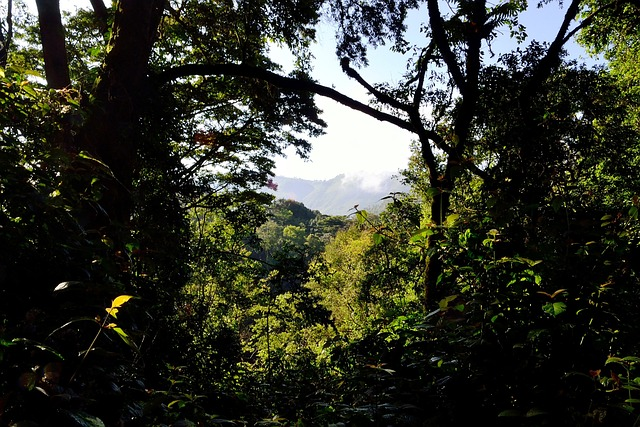

This can easily be described as Uganda’s most popular park as a Gorilla Trekking base. It is referred to as Impenetrable due to its thick forestation that makes accessibility of the park’s interior difficult. It was declared a UNESCO Natural World Heritage site in 1994 protecting about half of the world’s mountain Gorilla population. It is however quite small in size covering about 321 km². Bwindi boasts 17 habituated Gorilla Families split in four bases around the park. Viewing is limited to 8 people per family and for a maximum of 1 hour.
